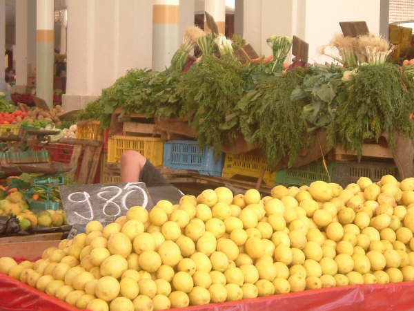
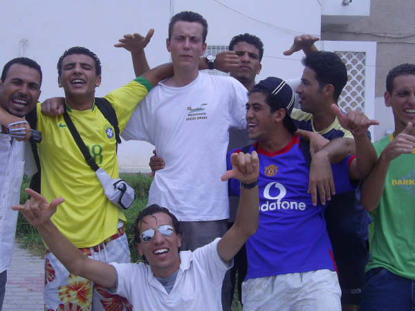
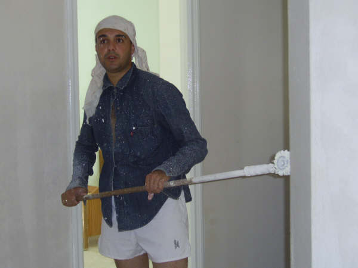
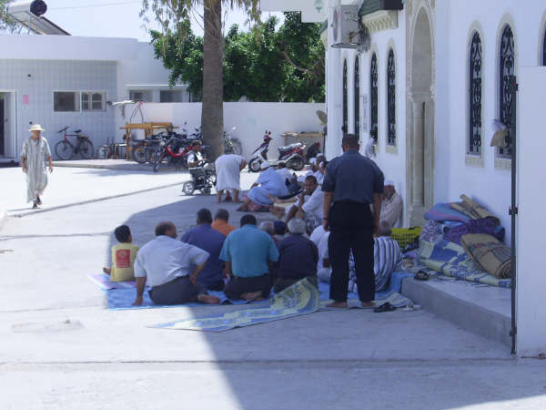
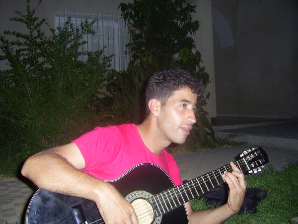
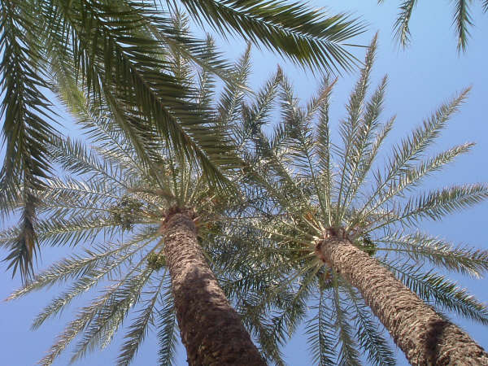

Projecten
Overig
Werken bij 45 graden in Tunesie - 2007
Christi deed een werkkamp in Tunesie. Als je in Noord-Afrika een project wilt doen, is het verplicht dat je Frans spreekt. In haar verslag vertelt ze hoe er veel gelachen is en ook gewerkt en gerelaxed. Maar dat ze ook blij was dat ze Arabisch sprak.
Toch nog even mijn hele grote stapel foto's doorgekeken voor ik aan dit stukje ben begonnen.
En wat zie ik? Vooral veel lachbuien, verfspetters, couscous, zandkorrels (soms ook achter de lens in plaats van voor de lens van de camera), stukken tapijt, geverfde stoelen en tja, overal een strakblauwe lucht!
Het is al weer een poosje geleden, maar de smsjes en mailtjes uit Tunesië, Algerije, Frankrijk, Amerika en Zuid-Korea houden de herinneringen levend.


Wat hebben we daar dan gedaan? Het oorspronkelijke idee was om de tuin van een jeugdcentrum om te knappen, maar dat bleek zelfs met een grote dosis enthousiasme een onmogelijke opgave in meer dan 45 graden Celsius! De eerste dag is de opzet al veranderd en hebben we ons gestort op het SOS-kinderdorp. We hebben daar een compleet huis geverfd van binnen, stoelen opgeknapt, een theaterzaal opnieuw "gevloerbedekt".
De werktijden waren erg relaxed. Was het oorspronkelijk de bedoeling van 07 tot 13 te werken, dit pakte vaak uit in een werkdag van half negen (toen hadden we de "man met de sleutel" gevonden, was iedereen klaar met ontbijten en was het materiaal aanwezig) tot half één.


Het werken op zich was gezellig, goed te doen. Wat na anderhalve week wel ging storen was het feit dat er zo weinig georganiseerd bleek te zijn keer op keer: niet genoeg verf, geen duidelijke taakplanning, werk dat we hadden gedaan bleek niet nodig te zijn enzovoort.
Deze hele andere kijk op organiseren bleek ook in de middagprogramma's: we kregen in het begin van de week een mooi programma uitgereikt, maar welgeteld één programmaonderdeel ging door.
Maar eerlijk is eerlijk: we hebben genoten! Zo bleek het mogelijk dat er op de valreep een nepbruiloft werd georganiseerd, was er een bus tot onze beschikking, zijn we op twee echte bruiloften uitgenodigd, hebben we veel tijd op het strand doorgebracht en was er veel oprechte interesse naar wie wij waren en dachten.


Ik denk zeker dat dit project nut heeft gehad: niet alleen in materiële zin, maar ook op een ander vlak: ik denk dat iedere deelnemer geprikkeld is om stil te staan bij een andere cultuur en nieuwsgierig gemaakt om te investeren in de ander.
Ik heb ontzettend veel geleerd: bomen over de verschillen tussen de islam en het christendom, de gelijkenissen tussen het Nederlands en het Arabisch, de verschillende kijk op relaties, geld, werk, man/vrouw. Heerlijk om te kunnen praten met de ander, in plaats van over de ander.
Wel merkte ik in veel opzichten dat ik een enorme voorsprong had: ik heb jaren in Tunesië gewoond. De voertaal was officieel Frans, maar vaak bleek enige kennis van het Arabisch een welkome aanvulling om mezelf verstaanbaar te maken en op de hoogte te zijn van wat er gebeurde. Hierdoor gingen de zuiver Franstaligen soms de mist in.
Ja, ik wil toch wel zeggen dat ik ontiegelijk heb genoten! De vele hilarische momenten zijn moeilijk na te vertellen: typische "je had erbij moeten zijn", maar met de foto's hoop ik toch een klein beetje een indruk te geven van de sfeer.
Christi van Iperen